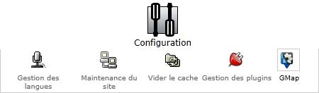
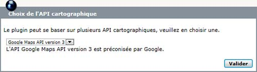
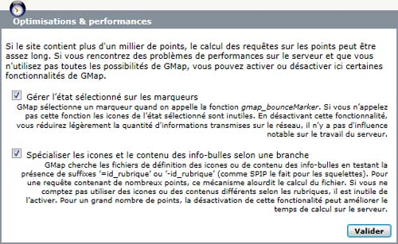
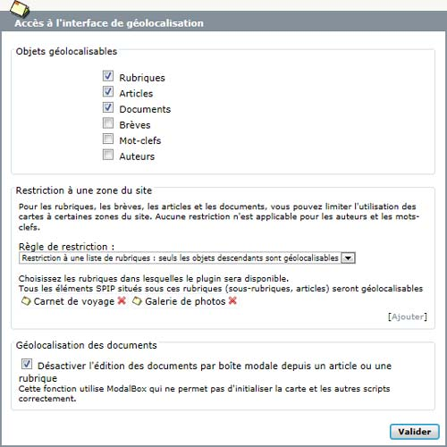
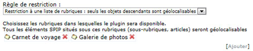
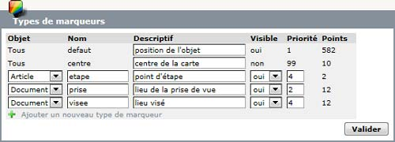
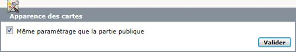
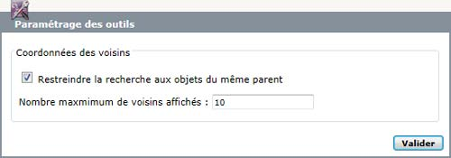
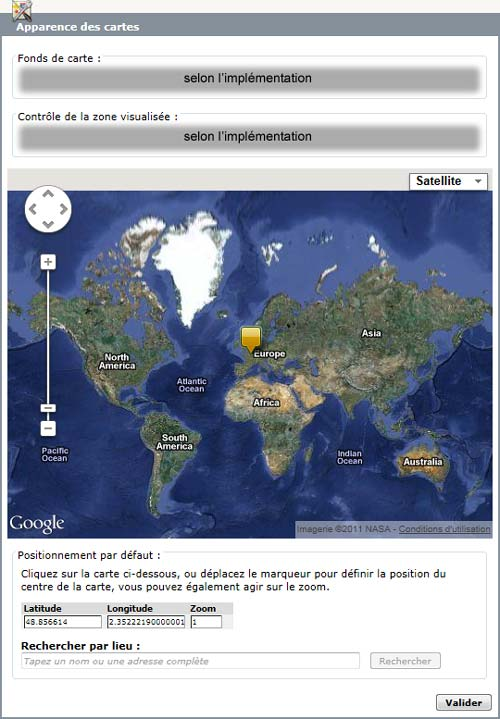
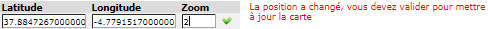

Le paramétrage du plugin GMap peut être atteint depuis le menu Configuration de SPIP en cliquant sur l'icone GMap :

Le paramétrage est décomposé en cinq sections : Système, Géolocalisation, Cartographie, Outils et Aide.
La partie Aide est constituée des pages que vous êtes en train de lire.
Cette page permet de fixer les options les plus importantes de GMap : le choix de l'API. Elle contient aussi des options globales qui affectent le fonctionnement au niveau géolocalisation et cartographie.

Cette section permet de choisir l'implémentation de la couche cartographique client. Actuellement, le plugin ne contient d'implémentation que pour les API Google Maps.
Les choix suivants sont possibles (le paramétrage par défaut est en gras) :
Ces paramètres dépendent de l'API.
Pour que les cartes s'affichent, il est indispensable de fournir une clef d'enregistrement (suivre le lien indiqué dans l'interface pour en obtenir une). Si la clef n'est pas renseignée, les cartes seront désactivées sur l'ensemble du site (y compris dans la partie privée).
Le second paramètre permet de spécifier la version de l'API à utiliser. Il est recommandé d'utiliser la "version courante récente mais stable" pendant le développement puis de figer la version quand le site passe en production afin d'éviter les mauvaises surprises.

Comme l'indique le commentaire, la clef n'est nécessaire que pour charger l'API Google Earth (au travers de l'extension Googleearth qui se charge de l'intégration dans Google Maps V3). Si elle n'est pas fournie, les cartes s'afficheront normalement mais la visualisation "earth" sera indisponible.
Le second paramètre permet de spécifier la version de l'API à utiliser. Google recommande d'utiliser la "version trunk" pendant le développement puis de figer la version quand le site passe en production afin d'éviter les mauvaises surprises.

Ces réglages peuvent permettre de résoudre des problèmes de performances sur le serveur quand on veut afficher un grand nombre de points sur les cartes (plus de 1000). Par défaut, toutes les fonctionnalités de GMap sont activées, ce qui correspond à un usage de GMap orienté vers l'ergonomie : peu de points sur chaque carte, haut niveau de personnalisation. À l'inverse, pour un usage orienté vers les performances mais avec peu de personnalisations, on peut désactiver les fonctionnalités inutilisées.
Chaque option est accompagnée d'un texte descriptif qui souligne les implications tant au niveau des fonctionnalités que les performances.
La géolocalisation se passe dans la partie privée du site, il s'agit d'associer des coordonnées aux objets éditoriaux de SPIP. Les options de cette page concernent toutes les opérations liées à la géolocalisation.

Par défaut, le plugin est paramétré pour permettre de géolocaliser tous les types d'objets supportés sur tout le site. Cette section de paramétrage permet de limiter l'étendue, d'une part à seulement un sous-ensemble des objets supportés, d'autre part à une ou plusieurs branches du site.
Pour interdire la géolocalisation sur certains objets il suffit de décocher la case correspondante. Le fait de décocher une case ne va ni détruire les points déjà saisis sur les objets ni empêcher les cartes de les représenter, cela va seulement supprimer l'interface de géolocalisation dans la partie privée.
Pour limiter l'utilisation du plugin sur des branches du site, il faut choisir "Restriction à une liste de rubriques" dans la liste déroulante "Règle de restriction". L'interface de choix des rubriques apparaît alors (voir le plugin SPIP-Bonux). Là aussi, les points déjà saisis et leur représentation sur des cartes n'est pas altérée par ce choix.

Attention : il s'agit ici de limiter l'affichage de l'interface de géolocalisation, ces options n'affectent pas l'affichage des cartes ou des points déjà définis. Pour restreindre la représentation des points sur les cartes, ou la présence de carte, il faut se servir des squelettes.
GMap se base sur la page de modification d'un document introduite par le plugin Médiathèque pour intégrer l'interface de géolocalisation. Dans les versions récente de Médiathèque, c'est une boîte modale qui permet de modifier les paramètres du document, mais l'initialisation des cartes n'est pas correct dans ce cas, GMap propose donc d'inhiber ce fonctionnement pour utiliser toujours les pages destinées à l'édition des document quand on clique sur le bouton "Modifier" des listes de documents.

GMap permet d'associer plusieurs point à un même objet, et chacun des points peu avoir un rôle spécifique (par exemple le point d'où a été pris une photo et le point qui était dans la visée). Un certain nombre de types sont prédéfinis mais il est possible de les modificer, de les supprimer et d'en ajouter.
L'interface montre la liste des types définis, les colonnes du tableau sont :

Par défaut, les cartes de l'espace privé (la géolocalisation) utilisent les mêmes options que celles de l'espace public. Cependant, il y a des cas où ce comportement n'est pas souhaitable, notamment si l'on veut que les cartes de l'espace public soient statiques, c'est-à-dire sans possibilités de changer de zoom ou de déplacement.
En décochant l'option "Même paramétrage que la partie publique", on peut paramétrer spécifiquement les cartes de l'espace privé. L'interface est la même que pour l'espace public, voir "Cartographie" ci-dessous.

L'interface de géolocalisation propose la liste des objets voisin aund on géolocalise un article ou un document. Les "voisins" sont calculés en fonction de la date. Plutôt que d'utiliser un critère de proximité, le plugin limite le nombre de voisins au <i>n</i> plus proches. On peut également limiter la requête sur les voisins au objet d'un même parent (rubrique pour les articles, articles pour les documents).

Ces options dépendent de l'implémentation choisie dans la section "Choix de l'API cartographique". Elles se regroupent en trois rubriques :
Le centre de la carte est positionné en déplaçant le marqueur jaune. On peut aussi éditer directement la latitude, la longitude et le zoom dans les zones de saisies. Dans ce cas, une interface de validation apparaît pour que les modifications soient prises en compte sur la carte :

La recherche par adresse, disponible selon les implémentations, propose également une interface spécifique qui permet de choisir parmi les différentes possibilités renvoyées par le geocoder :

Ces paramètres sont communs aux implémentations Google Maps V2 et V3, mais ils pourraient être différents, ou ne pas exister dans d'autres implémentations.

Il arrive souvent, si on géolocalise de nombreux documents, que les points soient suffisament proches pour se superposer. Le fonctionnement par défaut des API Google Maps fait alors que seul le dernier point ajouté est cliquable, les autres sont cachés.
Pour contourner ce problème, le plugin GMap propose une fonction de regroupement des bulles d’information qui permet de naviguer entre les descriptions des différents points affichés. La barre de navigation permet également de zoomer la carte pour différencier les points.

Cette fonction est désactivée par défaut car c’est un traitement effectué côté client qui pourrait être coûteux quand il y a trop de points.
Les autres paramètres permettent de restreindre la largeur des info-bulles. En effet, surtout sur Google Maps V3, il arrive souvent que les info-bulles qui contiennent beaucoup de texte deviennent trop larges par rapport à la carte.
Cette zone permet d'importer les points définis dans le plugin Google Maps API.